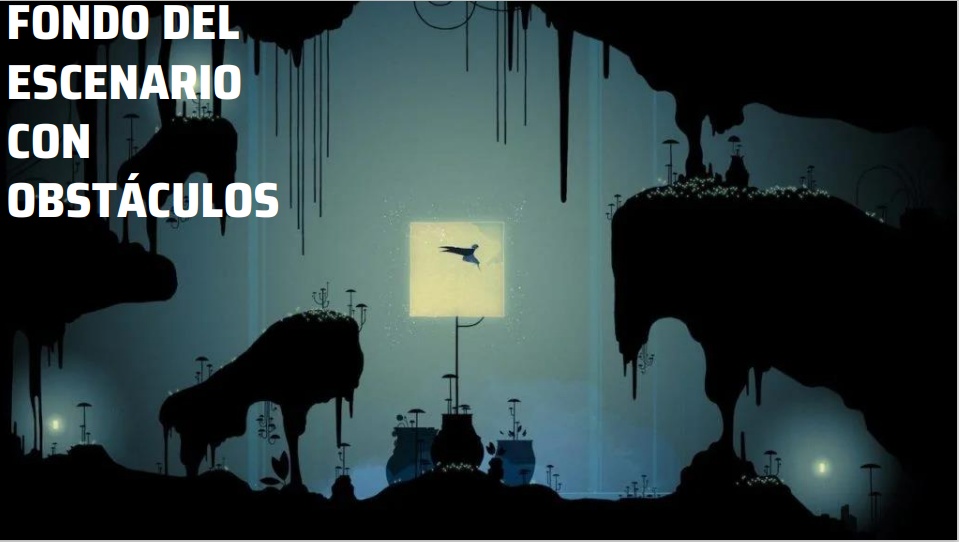

Contenido
'FASRAG' no es sólo un videojuego de tipo Metroidvania donde tiene un inicio y un final, se trata de una obra maestra en la que se pueda traspasar de la pantalla al
jugador los sentimientos que vive el personaje principal. Es un juego dirigido para todo el público en el cual se busca poder transmitir todos esos sentimientos que causa una
división tan abrupta de algo tan querido. Surgió como un mapa feliz, cuando de pronto un evento imprevisible lo tornó triste y oscuro.'FASRAG' no es sólo un videojuego de tipo
Metroidvania donde tiene un inicio y un final, se trata de una obra maestra en la que se pueda traspasar de la pantalla al jugador los sentimientos que vive el personaje principal.
Es un juego dirigido para todo el público en el cual se busca poder transmitir todos esos sentimientos que causa una división tan abrupta de algo tan querido. Surgió como un mapa
feliz, cuando de pronto un evento imprevisible lo tornó triste y oscuro.
Historia del Juego

|
Todo comenzó en una tarde soleada cuando Fallen daba un paseo revitalizante por el campo acompañada de su pequeña hija, en donde el color que sobresalía era el verde, un color que se
relaciona con la salud, por el propio poder de la naturaleza y el cual refleja esa armonía, la calma interior y el equilibrio emocional. Todo ese brillo que transmitía Fallen estando con
Sirius disfrutando de la naturaleza se desvaneció cuando el villano llamado Ragnar tuvo la valentía de arrebatarle algo tan valioso.En una noche muy fría y solitaria, con la luna llena
reinando en un cielo completamente despejado de estrellas. La calle inquietantemente solitaria y silenciosa. La oscuridad se apoderaba de cada rincón de la ciudad, solo un leve destello
de luz proveniente de la luna podía iluminar levemente la ciudad y algunas ventanas de casas y edificios. >
|
Mapa de Niveles
Nosotros nos vamos a basar en un mapa de un juego ya existente, la siguiente imagen representa el mapa que se va a realizar para el videojuego, donde cada nivel
está representado por un color, y ese color significa cada sentimiento por el que pasa Fallen.
|

|
Proximamente...